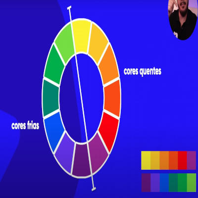
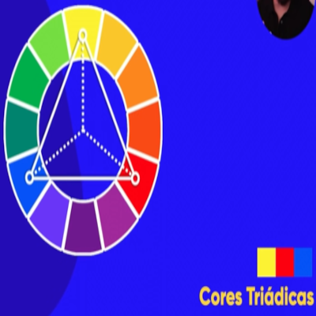

Círculo Cromático
- As cores primárias e secundáraias não ficam tão bonitas para representar algo na tela, mas são importantes
para representar as outras cores, as primárias são:
- As secundárias são:
- Toda cor terciária é a mistura entre a cor primária e a secundária, são conhecidas de cores pasteis,e o nome
dessa cor segue a mesma ordem,
por
exemplo:
- Amarelo-erverdado
- Amarelo-alaranjado
- Vermelho-alaranjado
- Vermelho-arroxeado
- Azul-arroxeado
- Azul-esverdeado
Cores frias e quentes

-
A peleta de cores é feita a partir de uma cor primária, e dela vamos ajustar para o que queremos. É
utilizado no máximo de 3 a 5 cores para o site, tirando preto e branco.
- Para logos a cor primária da logo deve ser utilizada como referência.
Cores complementares
São aquelas cores que tem mais contraste entre sí. É considerada a cor imediatamente oposta na paleta. por
exemplo, a cor que mais contrasta com o amarelo é o violeta
Cores análogas
São aquelas cores que ficam ao lado uma das outras, não há contraste mas tem um degradê que funciona, uma
técnicas muito utilizada é de escolher uma cor principal, suas análogas e depois puxar outra complementar da
principal para constrastar e harmonizar.
Cores análogas relacionadas
- São utilizadas para terem um contraste muito forte. Pegamos uma cor principal e uma vizinha em vez de
duas, dessas duas vamos pular uma cor e pegar a vizinha
Cores intercaladas
Cores triádicas, em quadrado e tetrádicas

Monocromático
- É escolhido uma cor e alterado apenas a saturação e luminosidade